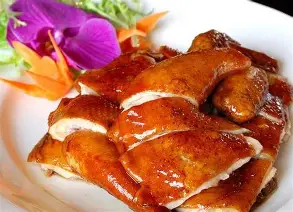
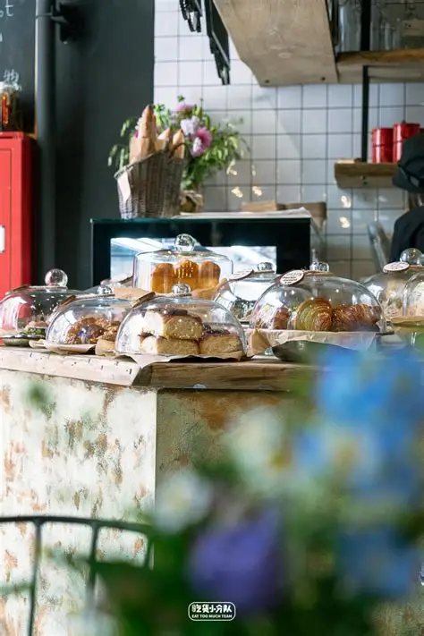
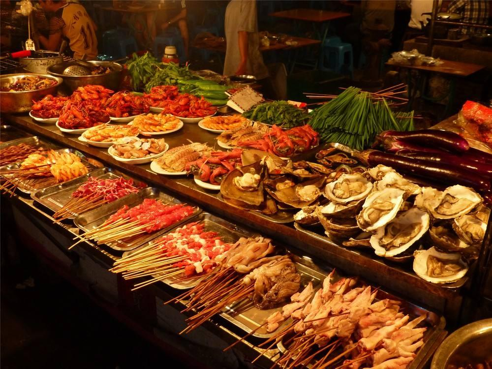
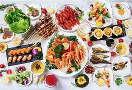
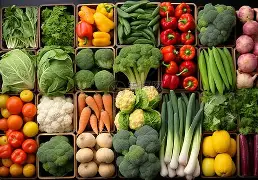

Discover the culinary treasures of my hometown
My hometown is a food lover's paradise, with a rich culinary tradition that has been passed down through generations. From cozy family-owned restaurants to street food stalls, every bite tells a story of our community's heritage. Explore these hidden gems that only locals know about.

Our town's most famous dish, made with fresh local ingredients and a secret family recipe that's been guarded for over 100 years. The perfect balance of flavors that will leave you craving more.

A family-run bakery that has been serving fresh bread and pastries since 1920. Their morning buns and sourdough loaves are legendary among locals.

Hidden in the back alleys of the market district, this street food stall serves up the most authentic local snacks. Try their signature fried dumplings and spicy noodles.
Want to experience the best of our local cuisine? Join our guided food tour and discover hidden gems that most tourists never find. Our knowledgeable guides will take you on a culinary journey through the town's most beloved eateries.

Fresh asparagus and strawberry dishes, perfect for the season.
Grilled corn, fresh salads, and homemade ice creams.
Pumpkin-based dishes and apple cider specialties.
Warm stews, hot cocoa, and festive treats.
Our cuisine is built on the freshest local ingredients, sourced from nearby farms and producers. Here are some of the key ingredients that make our food unique:

Locally grown fruits and vegetables, picked at the peak of freshness.
Handcrafted cheeses and dairy products from local farms.
Local honey and maple syrup, adding natural sweetness to our dishes.
"The food tour was incredible! I got to try dishes I would never have found on my own, and the guides were so knowledgeable about the local cuisine."
"The street food stall in the market district was a revelation. The dumplings were the best I've ever had, and the price was unbeatable."
"The artisanal bakery has the most amazing sourdough bread. I bought a loaf every morning during my stay and it was worth every penny."
Start planning your culinary adventure in my hometown today!